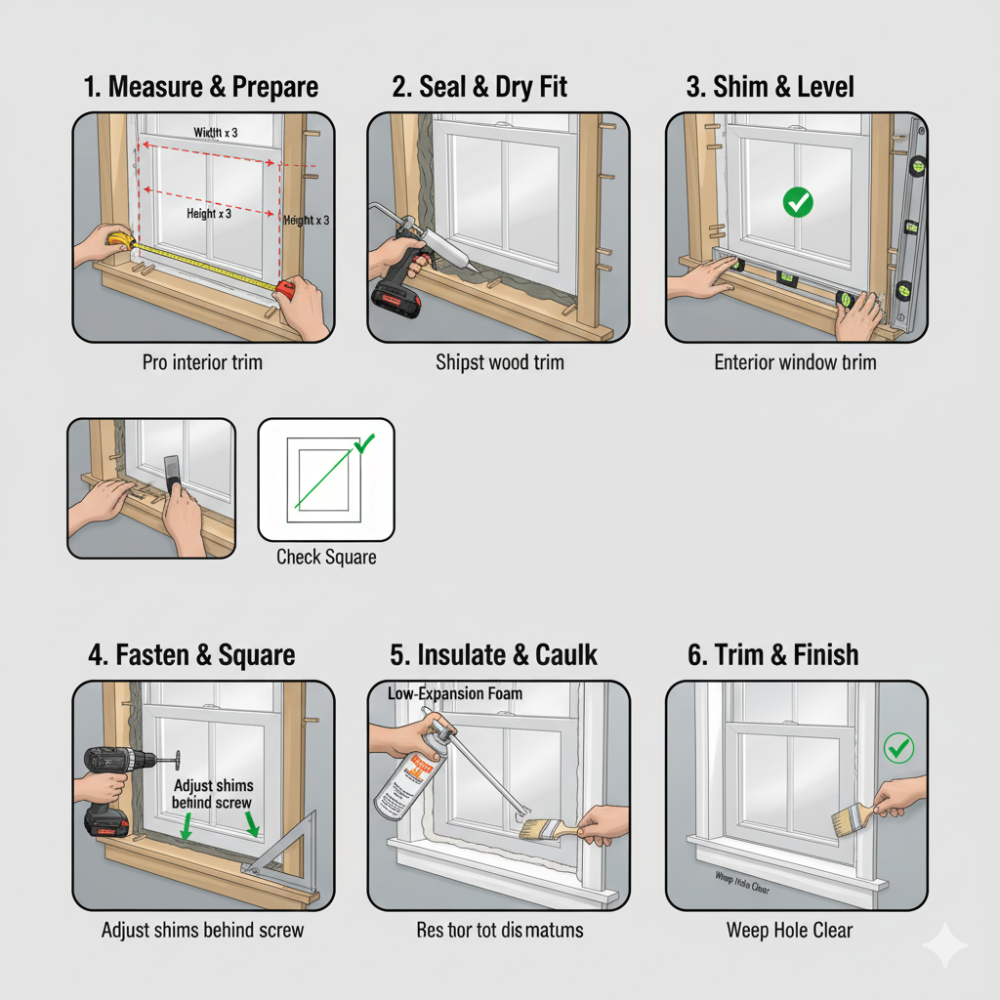

How to Replace a Window (Insert/Retrofit)
Replacing an old window with an insert, sometimes called a retrofit window, improves comfort and efficiency without removing the exterior siding or interior drywall. This guide explains how to measure the opening, remove the old sash, set and square the new unit, insulate the gaps, and finish the trim for a clean, weather‑tight result.
Tools & Materials You'll Need
Gather a tape measure, pry bar, utility knife, drill/driver, screw assortment, shims, level, putty knife, caulk gun, exterior‑grade sealant, low‑expansion window foam, insulation, and interior/exterior trim as needed. The new replacement window unit should be ordered to the correct size with a nailing‑fin removed or integrated depending on your style.
Step 1: Measure and Order the Window
Measure the existing window’s frame opening in three places for width and height and record the smallest dimensions. Subtract about 1/4 inch from each to allow room for shims and adjustment. Confirm the opening is generally square by comparing diagonal measurements; a modest difference is acceptable and can be corrected with shims. Order the replacement to these final dimensions and choose the correct jamb depth and color to match the room.
Step 2: Prepare the Opening
Remove blinds and interior trim carefully with a pry bar, using a putty knife as a protector to avoid wall damage. Score paint and caulk lines with a utility knife before prying. Take out the lower and upper sashes according to the old window type, then remove any balance hardware, parting beads, and leftover nails or screws. Vacuum debris and dry‑fit the new unit to verify clearance on all sides.
Step 3: Dry‑Fit, Shim, and Set the Window
Run a continuous bead of high‑quality sealant along the sill and slightly up the jambs where the new frame will sit. Place the window into the opening from the interior or exterior as specified by the manufacturer and center it with temporary shims at the sill. Use a level to ensure the sill is dead level and adjust shims to remove any twist. Check that the side jambs are plumb and that the unit operates smoothly before fastening.
Step 4: Fasten and Square
Drive the provided screws through the window’s pre‑drilled holes into solid framing, starting at the hinge side for casements or one upper corner for double‑hung and slider units. Re‑check for square by comparing diagonals and by verifying equal reveals around the sash. Adjust shims behind the screw locations to keep the frame straight and avoid bowing, then tighten the screws fully.
Step 5: Insulate and Seal
Fill the small gap between the window frame and rough opening with low‑expansion foam or gently packed fiberglass; avoid overfilling, which can distort the frame. Caulk the interior and exterior perimeters with a paintable sealant, paying special attention to the sill where water can collect. Wipe excess sealant for a neat finish and confirm the weep holes, if present, remain unobstructed.
Step 6: Trim and Finish
Reinstall or replace interior casing and exterior trim as needed, scribing for a tight fit against the wall and siding. Fill nail holes, sand lightly, and paint or seal to match the existing surfaces. Operate the window several times to ensure smooth movement and verify that the locks engage fully. Dispose of the old sash and glass safely or recycle where permitted.
